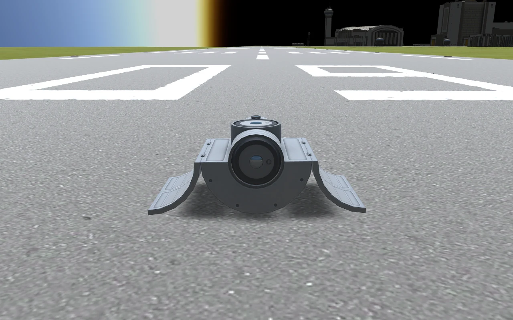
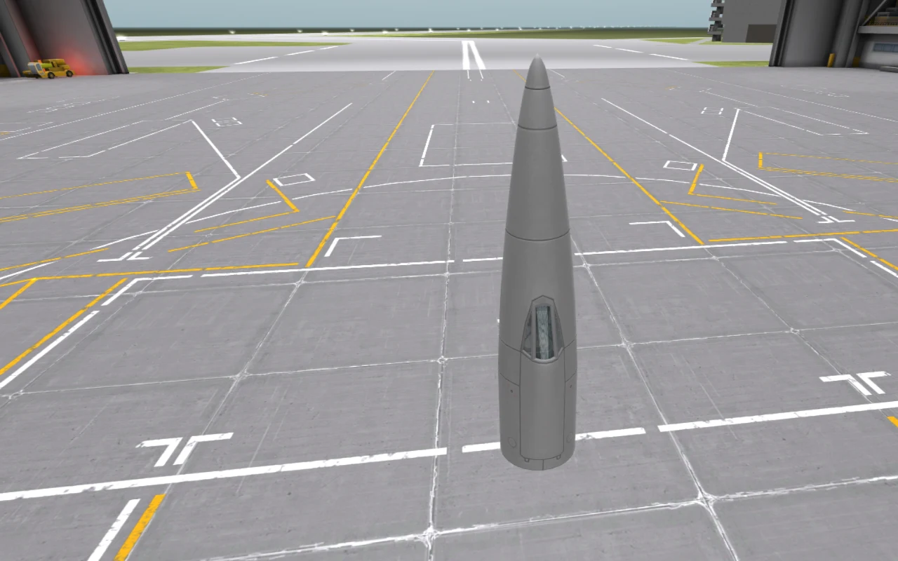

← Back to supported mods
Parts
Blue Bee Shuttle Cockpit
Blue Hawk Mk1 Cockpit
Blue Rock Mk1 Astroplane Cockpit
Blue Rock Mk1 Crew Module
Blue Rock Size 1 Docking Adapter A
Blue Rock Size 1 Docking Adapter B


Blue Steel Cockpit
